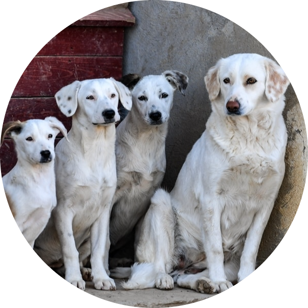

01.Golden Retriver:

|  | Description About Dog Breed:A dog breed is a particular strain of dog that was purposefully bred by humans to perform specific tasks,such as herding, hunting, and guarding. |
01.Golden Retriver:
|
Golden Retrievers are considered to be the fourth smartest dog breed in the world. A perfect family dog, Golden Retrievers are extremely obedient (if trained from an early age) and are one of the most loyal dog breeds. Known for their beauty – Golden Retrievers have a beautiful fur with pretty dark eyes that have a kind expression and are great with family and kids. Highly intelligent, Golden Retrievers are popular as guide dogs and even as service dogs. |
üêï Breed Overview: |
|
| Group: | Sporting |
| HEIGHT: | 23 to 24 inches (males); 21.5 to 22.5 inches (females) |
| WEIGHT: | 65 to 75 pounds (males); 55 to 65 pounds (females) |
| COAT: | Medium-length double coat |
| COAT COLOR: | Light to dark gold |
| LIFE SPAN: | 10 to 12 years |
| TEMPERAMENT: | Trustworthy, intelligent, playful, energetic. |
| HYPOALLERGENIC: | No |
| ORIGIN: | United Kingdom, Scotland |
02.Lhasa Apso: |
The lavishly coated Lhasa Apso is a thousand-year-old breed who served as sentinels at palaces and monasteries isolated high in the Himalayas. Smart, confident, and complex, Lhasas are family comedians but regally aloof with strangers. |
üêï Breed Overview: |
|
| HEIGHT: | 10 to 11 inches at the shoulder |
| WEIGHT: | 12 to 18 pounds |
| PHYSICAL CHARACTERISTICS: | Dense double coat in nearly any color, most commonly black, white, gold, gray, cream, or a combination of these |
03.Siberian Husky:
|
Siberian Husky, a thickly coated, compact sled dog of medium size and great endurance, was developed to work in packs, pulling light loads at moderate speeds over vast frozen expanses. Sibes are friendly, fastidious, and dignified. The graceful, medium-sized Siberian Husky's almond-shaped eyes can be either brown or blue'¿and sometimes one of each'¿and convey a keen but amiable and even mischievous expression. |
üêï Breed Overview: |
|
| GROUP: | Working (AKC) |
| HEIGHT: | 20 to 24 inches |
| WEIGHT: | 35 to 60 pounds |
| COAT AND COLOR: | Double-layered coat in black, gray, red, brown, tan, or white |
| LIFE EXPECTANCY: | 12 to 15 years |
04.Newfoundland: |
The Newfoundland is a large working dog. They can be black, brown, grey, or white. However, in the Dominion of Newfoundland, before it became part of the confederation of Canada, only black and Landseer (white-and-black) coloured dogs were considered to be proper members of the breed. |
üêï Breed Overview: |
|
| GROUP: | Working |
| HEIGHT: | 26 to 28 inches tall at the shoulder |
| WEIGHT: | 100 to 150 pounds |
| COAT AND COLOR: | Thick double coat in brown, black, gray, or black and white |
| LIFE EXPECTANCY: | 9 to 10 years |